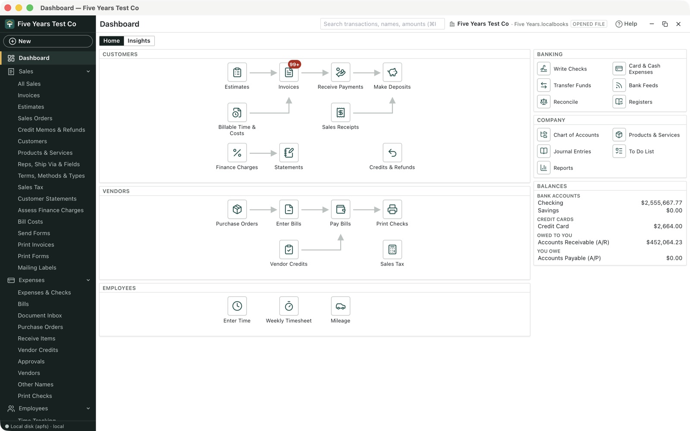
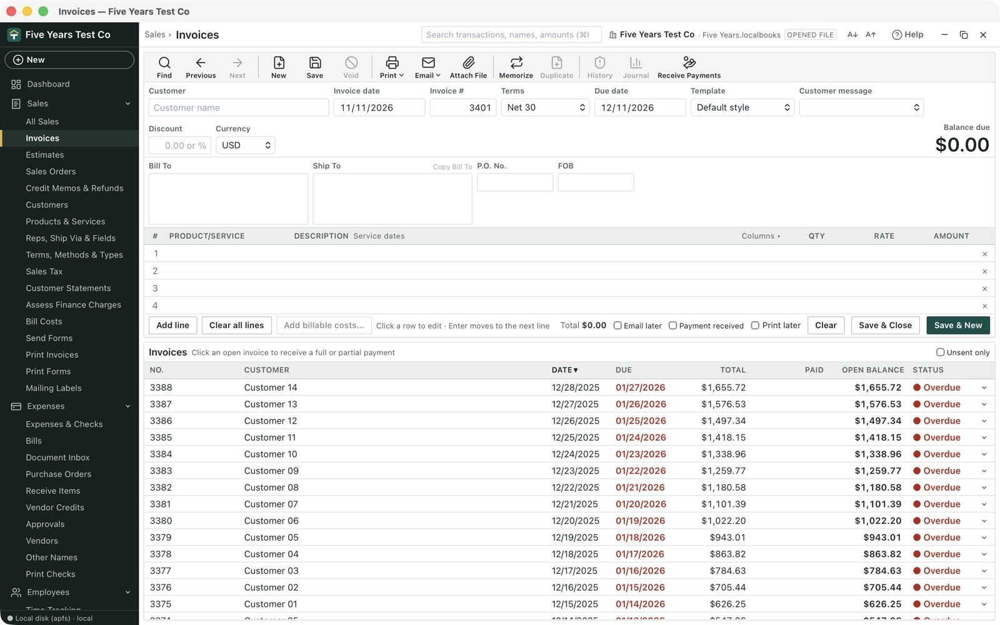
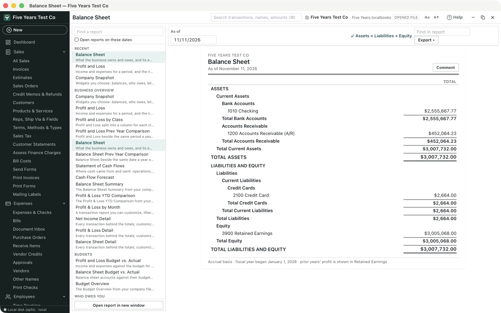

Your books, kept at home.
Tillhouse is double-entry accounting for US small businesses that lives in one file on your own computer. Invoices, bills, bank feeds, inventory, reconciliation and financial statements, with every transaction posted as a balanced journal entry.
- No account
- No subscription
- No cloud
- Open source

Everything a small business keeps books for
A classic desktop accounting layout, fast with the keyboard, for sales, purchases, banking and reports. For US businesses: sales tax, 1099s, ACH files and printed checks follow US rules. There is no VAT or GST, and no payroll.


Invoices, estimates and sales orders
Design your own forms, then print them, save them as PDF or email them, one at a time or in a batch. Credit memos, statements, finance charges and price levels too.
Bills, checks and purchase orders
Enter and pay bills, print checks, make ACH payment files, receive items before the bill, route bills for approval and enter receipts from a PDF.
Bank feeds and reconciliation
Import OFX, QFX, CSV or PDF statements, or connect through SimpleFIN. Rules sort repeat payees, payout feeds bring in Stripe, PayPal and Shopify, and reconciling locks the month.
Reports you can click into
Profit and loss, balance sheet, aging, sales and expense reports, budgets, graphs and a Company Snapshot. Click any amount to see the transactions behind it.
Inventory and jobs
Stock on hand at moving-average cost, item groups, reorder points and job costing, with time and mileage billed to customers.
Sales tax, 1099s and closing
Sales tax by agency with returns and adjustments, 1099s and W-9s, a tax calendar, a closing date, and Accountant’s Copy for your accountant.
Users and encryption
Users with roles, optional whole-file encryption and two-step sign-in, and a hash-chained audit trail that shows any change made behind its back.
Backups that check themselves
A verified backup every day, a copy before every upgrade, encrypted offsite backup to a folder you choose, and Reinstall Previous Version if an update misbehaves.
Money kept exact
Amounts are whole cents, never rounded floats. Debits equal credits, checked twice, and posted entries are corrected by reversal, never edited.
Bring your books with you
Tillhouse opens QuickBooks Desktop company files and backups from Windows and Mac, and reads Quicken, GnuCash, QuickBooks Online report exports and spreadsheets.
Everything comes in through the Desktop Migration Wizard, in Settings › Import & Migration (or File › Utilities › Import / Convert…). The wizard only reads your file: nothing changes in your old program, and nothing is added to Tillhouse until you post.
1. Which program are you leaving?
2. What do you have?
Every option at once
| Your books are in | What to do |
|---|---|
| QuickBooks Desktop for Windows | Choose your company file (.qbw) or a backup (.qbb) in the wizard. |
| QuickBooks for Mac 2012 or earlier | Choose your company file (.qb2012, .qb2011 or .qb2010) in the wizard. QuickBooks doesn’t need to be installed. Steps |
| QuickBooks Desktop for Mac 2016 and later | In QuickBooks, choose File › Export › To QuickBooks for Windows, click Verify, and leave the password blank. Then choose the .qbb it saves. Steps |
| QuickBooks still installed (Windows or Mac) | Preview. Let Tillhouse export it: open your company file in QuickBooks (on a Mac, also open Reports › Accountant & Taxes › Journal for all dates), then click Export from QuickBooks in the wizard. Tillhouse asks QuickBooks for the data through Intuit’s own interfaces, read-only. Windows needs Intuit’s free QuickBooks SDK. Not yet tried against a running QuickBooks. Steps |
| QuickBooks Online, or a QuickBooks you no longer have a license for | Export the Journal report (dates: All), plus the account, customer, vendor and item lists, to Excel or CSV, and choose them all together. An expired QuickBooks still opens in view-only mode, which can run reports. Steps for each version |
| Quicken | In Quicken, choose File › File Export › QIF File with All accounts (or one account at a time), and include transactions, the account list and the category list. Then choose the .qif. Steps |
| GnuCash | Choose your .gnucash book (either the XML or SQLite kind). Steps |
| A spreadsheet of customers, vendors, transactions or journal entries | Under step 1, open From a spreadsheet you laid out, choose the .csv or Excel file (or download the template), and match its columns. Every row that would fail is listed before anything is staged. Steps |
| A payment processor, point of sale or payroll tool | Choose its IIF export (.iif). For Stripe, PayPal or Shopify Payments payouts, connect them in Banking › Payout Feeds instead. For a payroll service, post its journal export with Payroll in the wizard. Steps |
| Only your bank | Start a new company and bring in your bank history from Banking › Bank Feeds: OFX, QFX, QBO, CSV or PDF statements, or a SimpleFIN connection. Steps |
Then, whichever program you came from
- Run a trial balance in your old program first, so you have something to compare with.
- In Tillhouse, open Settings › Import & Migration and choose your file or files.
- Check Balances matching the file, then match each account to a Tillhouse account (or click Match existing accounts and create the rest).
- Choose Full import to bring in invoices, bills, payments and deposits as real documents, so open balances and aging carry over. Then post.
- Compare Tillhouse’s trial balance with your old program’s. Not right? Start over… under Your imports puts your books back exactly as they were.
Full details, including what each format can and can’t carry over: Moving your books guide.
Ten minutes on Windows, Mac or Linux
Tillhouse is not code-signed yet, so the first start takes one extra click. These are the steps.
- Download the Windows installer (the file ending in
-setup.exe). - Open it. Because Tillhouse is not code-signed yet, Windows may show “Windows protected your PC”. Click More info, then Run anyway.
- Follow the installer. It installs for your user account only and does not need an administrator.
- Start Tillhouse from the Start menu.
-setup.exe installer rather than the .msi: automatic updates use the same kind of installer, so you never end up with two copies.- Download the macOS disk image (
.dmg). One download works on Apple silicon and Intel Macs. - Open it and drag Tillhouse into Applications.
- Open Tillhouse from Applications. Because Tillhouse is not notarized by Apple yet, macOS stops it the first time.
- Open System Settings › Privacy & Security, scroll down to the message about Tillhouse, and click Open Anyway. You only need to do this once.
macOS says Tillhouse “is damaged and can’t be opened”
That message means macOS quarantined the download. Open Terminal and run
xattr -cr /Applications/Tillhouse.app, then open Tillhouse again.
- Debian or Ubuntu: download the
.deband install it withsudo apt install ./Tillhouse_*.deb. - Fedora or openSUSE: download the
.rpmand install it with your package manager. - Any distribution: download the
.AppImage, make it executable (chmod +x), and run it. Only the AppImage updates itself; the.deband.rpmare updated by installing the new package.
What’s new to test in 0.16
Testing on a copy of your books? Back up first in Settings › File & Data Controls. For a structured run, work through the edge-case checklist; the changelog has everything that changed.
- New in 0.16.0: The Tillhouse name: let the update install over 0.15, then check your company opens with its settings, backups and saved sign-in as before.
- New in 0.16.0: Inventory from a QuickBooks file: do a full import of a company file with inventory and compare quantities with its stock status report.
- New in 0.16.0: Touch ID or Windows Hello (optional): with two-step sign-in on, add this computer in Settings › Users & Passwords and sign in again.
- New in 0.16.0: Backup safety: back up to another drive, run a test restore, and check File & Data Controls says so.
- New in 0.16.0: Keyboard: press F6 to move between the sidebar, the toolbar and the window, and work a form without the mouse.
Still worth testing from earlier versions (45)
- New in 0.15.0: Invoice number and new names: start an invoice and check the Invoice # box; type a customer that isn’t on your list and confirm it asks before adding it.
- New in 0.15.0: Billable costs on the invoice: mark a card charge billable to a customer, then start an invoice for them and add it when offered.
- New in 0.15.0: Purchase orders: edit, delete, print and email an open purchase order, then make a bill from it.
- New in 0.15.0: Sales tax adjustments: in Sales › Sales Tax, use Adjust… and check the return.
- New in 0.15.0: Encryption and two-step sign-in (optional): on a test copy, turn them on in Settings › Users & Passwords and sign in again.
- New in 0.14.0: Sales orders: open Sales › Sales Orders, record an order, then turn it into an invoice for part of it and check what is left open.
- New in 0.14.0: Receive items before the bill: make a purchase order, receive part of it in Vendors › Receive Items, then enter the bill from the receipt.
- New in 0.14.0: Discounts and charges on purchase forms: add a discount or other-charge line to a bill, check or purchase order and check the total.
- New in 0.14.0: Company Snapshot: open Reports › Company Snapshot, add widgets, move them and change their dates.
- New in 0.14.0: Merge duplicates: rename a customer, vendor, item or account to another one’s name and confirm the merge.
- New in 0.14.0: Payout feeds: in Banking › Payout Feeds, connect Stripe, PayPal or Shopify Payments, fetch a payout and check the deposit matches the bank line, fees included.
- New in 0.14.0: Approvals: add a rule in Expenses › Approvals, enter a bill it covers, and approve or reject it.
- New in 0.14.0: Document Inbox: drop a PDF receipt on Expenses › Document Inbox and click Enter as bill.
- New in 0.14.0: Encrypted offsite backup: set one up in Settings › File & Data Controls › Offsite backup, then click Test restore.
- New in 0.14.0: Reinstall Previous Version: open Help › Reinstall Previous Version… and check it finds the release before this one (you don’t have to install it).
- New in 0.14.0: Accountant’s Copy and External Accountant users: make an Accountant’s Copy with a dividing date, or add your accountant as a user.
- New in 0.13.0: Early-payment discounts on Receive Payments: set a discount account in Settings › Preferences Console › Payments, give an invoice the terms 2% 10 Net 30, then receive the payment; the Discount column fills in and the payment closes the invoice.
- New in 0.13.0: Every report in the Reports menu: open Reports and try the List submenu and Memorized Reports.
- New in 0.13.0: Form shortcuts: on an open invoice or bill press Ctrl+N for a new one, Ctrl+P to print, and Page Up / Page Down for the previous and next.
- New in 0.12.0: Preferences by category: open Settings › Preferences Console, pick a category on the left and switch between My Preferences and Company Preferences; try sales tax on the cash basis, the report basis and Automatically place a decimal point.
- New in 0.12.0: Edit a part-paid invoice or bill: double-click an invoice that has a payment, change a line and save; the payment stays applied and the open balance follows.
- New in 0.12.0: Bill To, Ship To and credit limits: give a customer addresses and a credit limit, then start an invoice for them; the addresses fill in, and going over the limit asks before saving.
- New in 0.12.0: Save & New and date keys: in any date box press t, +, m or y; finish a form with Save & New (Alt+N) to start the next one.
- New in 0.12.0: Registers and banking: type a check into the blank row at the bottom of a bank register; tick Print later on a check; try Banking › Record Bounced Check….
- New in 0.12.0: Lists, items and reports: set up Terms such as 2% 10 Net 30, add a Subtotal or Discount line to an invoice, and run the Customer Phone List or Audit Trail.
- New in 0.11.0: A toolbar on every form: open an invoice, bill or check and use Find, Save, Print ▾ and Memorize across the top; on Receive Payment, pick how you were paid from the tiles.
- New in 0.11.0: Add as you type: type a new name in the Vendor or Customer box and choose Add as a new vendor (or customer); choose ＋ Add new item… in the item column, or ＋ Add new class… with class tracking on.
- New in 0.11.0: Find what a name did: click a vendor or customer to list its transactions; double-click a row in a register, the Invoices, Bills or Expenses list to open it; click a register or Reconcile heading to sort.
- New in 0.11.0: Enter moves between fields: turn it on in Settings › Preferences Console › General, then fill in a bill with Enter instead of Tab.
- New in 0.11.0: Six more reports: try Profit & Loss by Month, Transaction List by Vendor and Voided Transactions.
- New in 0.10.3: Windows inside Tillhouse: open an invoice, a bill and a report and they float side by side; try Window › Tile Vertically, View › One Window and View › Open Window List. Close the company and reopen it: your windows come back.
- New in 0.10.3: Choose the left pane and where you start: in Edit › Preferences › Desktop View, show only the open windows (or no left pane), and start on Home, your last windows or a screen you choose.
- New in 0.10.3: What’s new in Help: press F1 and search “what’s new” for the newest features, each with a link to its steps.
- New in 0.10.2: Pay Bills writes checks: Expenses › Bills › Pay bills from a bank account, then print the checks. Attach the vendor’s invoice to a new bill too, or a receipt to an expense; a 📎 marks transactions with files.
- New in 0.10.2: Click a report: click an amount on the Profit and Loss, a name on A/R or A/P Aging, or a line on Sales by Customer, Sales by Product/Service or Expenses by Vendor Summary to see the transactions behind it.
- New in 0.10.2: Early payments and newest first: record a payment dated before its invoice; a bill can be paid before its date; lists now start with the newest at the top. If the books won’t open, the startup screen now says why, with Try again.
- New in 0.10.1: Mileage: Employees › Mileage, add a vehicle and a rate, record a trip, and bill it to a customer.
- New in 0.10.1: Settings in the sidebar: expand Settings; the migration wizard is now Settings › Import & Migration.
- Clean Up Books: Accounting › Clean Up Books applies leftover credits, clears Undeposited Funds, writes off old invoices and checks inventory against the Balance Sheet.
- Graphs: Reports › Graphs, then click a bar or slice to open its detail.
- Reminders and To Do: the Reminders panel on the Dashboard, and + New › To Do.
- Price levels: set one up under Products & Services, give it to a customer, and start an invoice for them.
- Condense Data (on a copy of your books): File › Utilities › Condense Data…, then open the archive it makes.
- QuickBooks for Mac 2010–2012 company files import in the Desktop Migration Wizard.
- Still have QuickBooks running? Try Export from my installed QuickBooks (preview) in the Desktop Migration Wizard, and tell us how it goes.
Updates
Tillhouse checks for a new version a few seconds after it starts and shows a bar at the top when one is ready:
It checks the download’s signature, saves a copy of your books before the new version first opens them, and reopens. On a Mac, the first start after an update may ask to use saved passwords in your Keychain: click Always Allow. Help › Reinstall Previous Version… goes back if something is wrong. Previews (marked preview beside the version above) are not offered as automatic updates: download them here.
Report a problem or suggest something
Open an issue on GitHub (a free account is needed). Please include:
| Please include | Where to find it |
|---|---|
| Your Tillhouse version | Settings › Updates |
| Windows or macOS version | Windows: Win + R, type winver. Mac: Apple menu › About This Mac |
| What you did, what you expected, what happened | Step by step is ideal; a screenshot helps a lot |
| The exact error message | Copy the text from the red message bar |
| A diagnostics file (optional) | Help › Save Diagnostics… saves a zip with Tillhouse’s version, your system and its own log, with no business data; attach it to the issue |
Found a security problem? Report it privately through GitHub’s private vulnerability reporting.
Nothing leaves your computer unless you send it
Your company file is one file on your own disk. Tillhouse has no account to sign up for and no telemetry. It only goes online for things you turn on.
Your file, your disk
Everything is in one company file you can copy, back up and move. Nothing is uploaded, and it opens without an internet connection.
Only what you turn on
Update checks, bank connections (SimpleFIN), payout feeds and sending email are each optional, and each says what it sends where.
Passwords stay in your keychain
Email, bank and offsite-backup passwords go to your computer’s Keychain or Credential Manager, never into the company file or a log.
Keep your old books for now
Tillhouse is new. Keep your old program’s books until a month or two in Tillhouse matches and you’re happy with the numbers.
Step-by-step guides
The same guides are built into the app: press F1 or click Help.
- What’s new
- Getting started
- Preferences reference
- The menu bar
- Using the keyboard
- Reminders and the To Do list
- Invoices
- Customer payments
- Sales receipts and estimates
- Sales orders
- Credit memos and refunds
- Customer statements
- Sales tax
- Design, print and email invoices and estimates
- Customers, products and services
- Bills
- Purchase orders
- Expenses and checks
- Attach receipts and documents
- Bank feeds and SimpleFIN
- Deposits and transfers
- Reconciling
- Inventory
- Time tracking
- Mileage tracking
- Reports
- Journal entries and voids
- Memorized and recurring transactions
- Budgets
- Foreign currency and exchange rates
- Closing the books
- Cleaning up the books
- Backups and company files
- Users, passwords and sensitive data
- The FTC Safeguards Rule and Tillhouse
- Moving from QuickBooks, Quicken or GnuCash
- How Tillhouse keeps the books accurate
- Read-only AI access
- Troubleshooting
- All guides